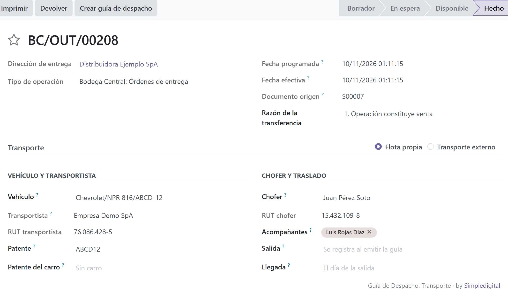
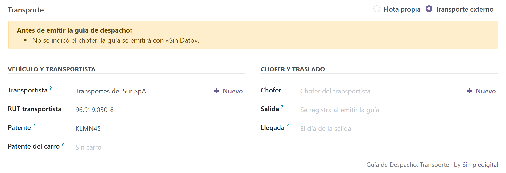
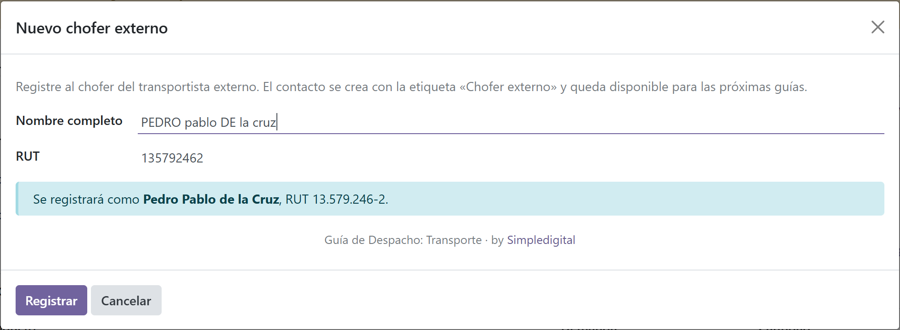
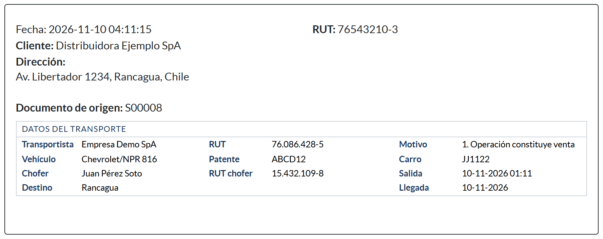

| Dato en la guía | De dónde sale | Si falta o está mal |
|---|---|---|
| Patente y patente del carro | Vehículo de la Flota, o escrita en la operación (transporte externo) | Se informa «Sin Dato» |
| Transportista y su RUT | La propia empresa (flota propia) o el contacto transportista | Aviso; bloqueo opcional |
| Chofer y su RUT | Empleado (RUT de su ficha) o contacto «Chofer externo» | Aviso; bloqueo opcional |
| Fecha y hora de salida, fecha de llegada | Se completan solas al emitir, si se dejan vacías | Siempre se informan |
| RUT y razón social del destinatario | La empresa del cliente, aunque se despache a una sucursal | Bloquea: el SII la rechaza |
| Comuna de destino | Dirección de entrega del cliente | Bloquea: el SII la rechaza |
| RUT con dígito verificador correcto | Chofer, transportista y destinatario | Bloquea: el SII la rechaza |
| Descuentos de la venta | Van como descuento global; los totales cuadran con la orden de venta | Automático |
Lo que el SII rechaza siempre bloquea la emisión. Lo demás se informa en la operación, o bloquea si la empresa lo elige en Inventario › Ajustes.
La sección Transporte aparece cuando la operación está Hecha (validada), que es el momento de emitir la guía. Funciona igual en entregas a clientes, traslados internos y cualquier operación que emita guía de despacho.
Flota propia. Al elegir el vehículo se completan la patente, el transportista (la empresa) y, si están vacíos, el chofer y los acompañantes habituales. Cada casilla es independiente: elegir el vehículo no borra lo ya escrito. El RUT del chofer viene de su ficha de empleado.

Con Transporte externo se eligen el transportista y su chofer, y la patente se escribe en la operación. Los vehículos de terceros no se agregan a la Flota. El recuadro amarillo indica lo que falta antes de emitir.
El botón + Nuevo registra un chofer o un transportista con solo su nombre y RUT. El módulo ordena mayúsculas y minúsculas, da formato al RUT, asigna la etiqueta y, si el RUT ya existe, usa ese contacto en vez de crear uno repetido.


Con Crear guía de despacho, el módulo revisa los datos, completa salida y llegada si están vacías y Odoo envía el documento al SII.
La guía impresa muestra un recuadro Datos del transporte, con los títulos en el color principal de la empresa (Ajustes › Diseño del documento) y los datos en negro.
Con la guía ya emitida los datos de transporte quedan fijos, igual que el XML enviado al SII.

Requiere Odoo Enterprise con la localización chilena y el módulo Chile - E-Invoicing Delivery Guide (Res. 154), que se instala junto con este módulo.